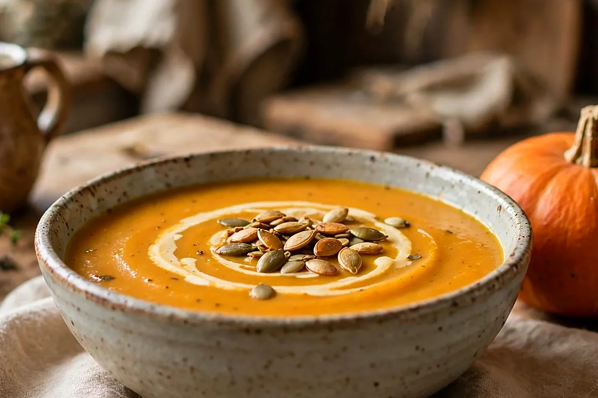

Kürbissuppe (Creamy Pumpkin Soup)
When it gets cooler outside, nothing beats a velvety pumpkin soup. Hokkaido does not need peeling, a touch of ginger brings warmth, and the coconut milk makes it wonderfully creamy. As a starter for guests or a light supper – it simply always fits.

Contents
Ingredients
Instructions
- Wash the pumpkin, halve it and scoop out the seeds with a spoon. Cut the flesh with its skin into cubes of about ¾ inch (2 cm) – Hokkaido does not need peeling.
- Heat the oil in a large pot and sweat the onion until translucent. Briefly sweat the garlic and ginger with it until fragrant.
- Add the pumpkin cubes, sweat briefly and deglaze with the stock. Cover and simmer over medium heat for about 20 minutes, until the pumpkin is completely soft.
- Blend the soup finely with an immersion blender. Stir in the coconut milk and heat through once more, but do not boil again.
- Season with salt, pepper, nutmeg and lemon juice. If the soup is too thick, simply add a little more stock.
- Ladle into bowls, drizzle with pumpkin seed oil and sprinkle with toasted pumpkin seeds. Fresh bread goes well with it.

Tip
Do not throw away the seeds from the pumpkin: wash, dry and toast them in a dry pan – they make the perfect topping. The soup can be prepared ahead and tastes just as good reheated.
📌 Find more recipe ideas on our Pinterest profile:
Lecker Rezepte on Pinterest
Lecker Rezepte on Pinterest